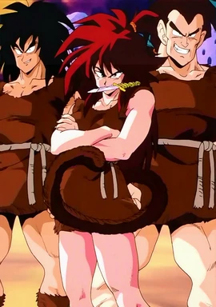

Sayajins
Os Saiyajins (サイヤ人) são uma raça guerreira que foi quase toda extinta por Freeza antes do começo da série Dragon Ball. Eles têm um papel central em Dragon Ball Z, Dragon Ball GT, e Dragon Ball Super após ser revelado que o protagonista Goku é na verdade um Saiyajin que foi mandado para destruir a Terra.
É revelado em Dragon Ball Super que o planeta de origem da raça Saiyajin é Sadala. No Sétimo Universo, ele foi destruído por lutas entre os próprios Saiyajins, mas ainda existe no Sexto Universo. O planeta Planta foi conquistado pelos Saiyajins após a derrota dos Tsufurujins, e eles o renomearam "Planeta Vegeta", homenageando o seu rei e guerreiro mais poderoso, Vegeta.
O planeta tem uma gravidade natural que é dez vezes maior que a da Terra, que ajuda os Saiyajins a terem mais força que outras raças. Após Freeza decidir que a raça Saiyajin poderia potencialmente criar uma ameaça à sua tirania, o Planeta Vegeta foi completamente obliterada do espaço, tornando os Saiyajins uma raça quase extinta.
Força Militar
Os Saiyajins possuíam um poderoso exército, o Exército Saiyajin. No Ano 737, o exército Saiyajin estava sob o comando de Nappa, que era seu general mais poderoso. O Exército Saiyajin estava empregado sob o Exército Galáctico de Freeza de Freeza, na qual o tirano usaria os guerreiros Saiyajins para conquistarem planetas para ele. O exército emprega vários rankings baseado no poder de luta: os únicos ranks mencionados nas séries são "Elite" e "Classe Baixa", com o criador da série Akira Toriyama confirmando que também existem guerreiros "Classe Média"; quase todos os Saiyajins são classe baixa, há uns dez classe média, e apenas Rei Vegeta e Príncipe Vegeta são guerreiros elites. Este ranking é determinado por poder latente ao nascimento, mas naturalmente, se seu poder de luta aumenta drasticamente depois, eles podem ser promovidos. Bardock era um dos soldados mais fortes da classe baixa, mas não possuía o poder suficiente para ser promovido para a classe média. A força militar teve sua destruição quando Freeza destruiu o planeta, com os únicos sobreviventes sendo Vegeta, Nappa, e Raditz.